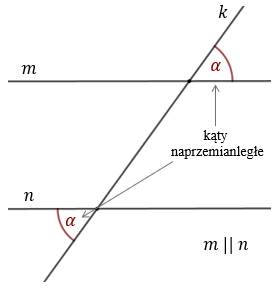
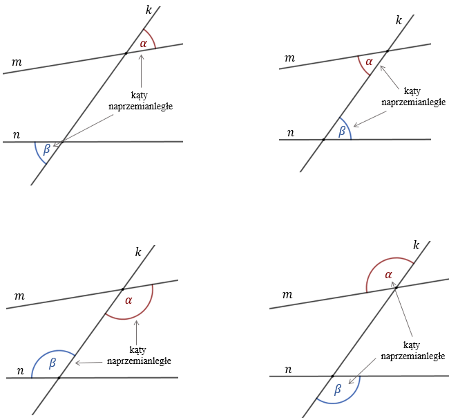

Kąty naprzemianległe - to para kątów utworzonych przez przecięcie dwóch prostych \(m\) i
\(n\) trzecią prostą \(k\), leżące po przeciwnych stronach prostej \(k\).
Jeżeli proste \(m\) i \(n\) są równoległe, to wówczas kąty naprzemianległe są równe: 
W przypadku gdy
proste \(m\) i \(n\) nie są równoległe, to kąty naprzemianległe mają różną miarę. 